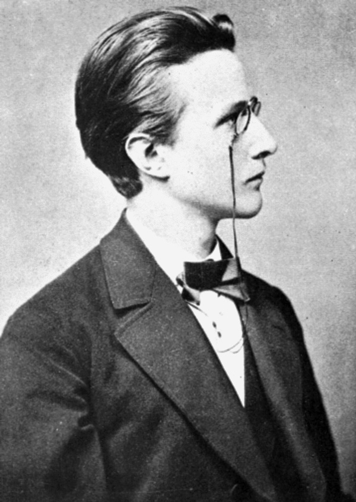

Биография
Биография
Макс Планк, родившийся 23 апреля 1858 года в Киле, принадлежал к старому дворянскому роду; среди его предков — видные юристы, учёные, военные и церковные деятели. Его дед (Heinrich Ludwig Planck, 1785—1831) и прадед (Gottlieb Jakob Planck, 1751—1833) были профессорами теологии в Гёттингенском университете, а дядя (Gottlieb Karl Georg Planck, 1824—1910) — известным юристом, одним из создателей Германского гражданского уложения. Отец будущего физика, Вильгельм Планк (Johann Julius Wilhelm von Planck, 1817—1900), был также юристом, профессором права Кильского университета. Он был женат дважды и имел двоих детей от первого брака (Хуго и Эмма) и пятерых от второго (Герман, Хильдегард, Адальберт, Макс и Отто). Мать Макса, Эмма Патциг (Emma Patzig, 1821—1914), происходила из пасторской семьи из померанского городка Грайфсвальд. Как писал известный физик Макс Борн, «о происхождении Планка, о всех этих людях — прекрасных, достойных, неподкупных, благородных и великодушных, отдавших себя служению церкви и государству, — необходимо помнить каждому, кто захочет понять характер Макса Планка и истоки его успеха».
Первые девять лет жизни Макса прошли в Киле, столице Голштинии, которая в то время была в центре противоречий между Данией и Пруссией. В 1864 году юный Планк даже стал свидетелем вступления в город прусско-австрийских войск. В 1867 году Вильгельм Планк принял приглашение занять должность профессора юриспруденции Мюнхенского университета и вместе с семьёй переехал в баварскую столицу. Здесь Макс был отдан в Максимилиановскую гимназию (Maximiliansgymnasium München); он занимался охотно и скоро стал одним из лучших учеников в классе. Хотя много внимания уделялось традиционным для гимназий предметам (в частности, изучению древних языков), преподавание естественнонаучных дисциплин в этой школе также находилось на высоком уровне. Глубокое влияние на юного Планка оказал учитель математики Герман Мюллер (Hermann Müller), от которого будущий учёный впервые услышал о законе сохранения энергии; у Макса рано проявился математический талант. И хотя учителя не видели у него каких-то особых способностей, они специально отмечали его личные качества — сильный характер, прилежность и исполнительность. Обучение в гимназии способствовало укреплению в нём интереса к науке, к выяснению законов природы, о чём он так писал на исходе жизни:
С юности меня вдохновило на занятие наукой осознание того отнюдь не самоочевидного факта, что законы нашего мышления совпадают с закономерностями, имеющими место в процессе получения впечатлений от внешнего мира, и что, следовательно, человек может судить об этих закономерностях при помощи чистого мышления. Существенно важным при этом является то, что внешний мир представляет собой нечто не зависимое от нас, абсолютное, чему противостоим мы, а поиски законов, относящихся к этому абсолютному, представляются мне самой прекрасной задачей в жизни учёного.— Планк М. Научная автобиография // УФН. — 1958. — Т. 64. — С. 625.
Другим увлечением Планка с детских лет была музыка: он пел в хоре мальчиков, играл на нескольких инструментах (особенно много времени он проводил за роялем), изучал теорию музыки и пробовал сочинять, однако скоро пришёл к выводу, что у него нет таланта композитора. К моменту окончания школы он оказался перед выбором: стать пианистом, филологом или заняться изучением физики и математики. Планк выбрал последнее и в сентябре 1874 года стал студентом Мюнхенского университета. Впрочем, в студенческие годы он по-прежнему много времени уделял музыке: играл на орга́не в студенческой церкви, служил хормейстером в студенческом певческом союзе, дирижировал любительским оркестром.
Вскоре после поступления в университет Планк по совету отца обратился к профессору Филиппу фон Жолли и рассказал, что хотел бы заниматься теоретической физикой. Тот принялся отговаривать студента от этого намерения, утверждая, что эта наука близка к завершению и что в ней осталось исследовать лишь некоторые незначительные проблемы. Впрочем, этот разговор не повлиял на желание Планка стать теоретиком. Объясняя это решение, он говорил, что у него не было желания совершать открытия, а только понять и по возможности углубить уже установленные основы науки . На протяжении шести семестров Планк слушал лекции по экспериментальной физике, которые читали Вильгельм фон Бец (нем. Wilhelm von Beetz) и тот же Жолли. Под руководством последнего Планк провёл своё единственное экспериментальное исследование, посвящённое проницаемости нагретой платины для газов, в частности водорода. Поскольку в Мюнхене не было кафедры теоретической физики, он начал посещать занятия математиков Людвига Зейделя и Густава Бауэра (Gustav Bauer), у которых, как он признавал позже, многому научился.
В лаборатории Жолли Планк познакомился с Германом Гельмгольцем, знаменитым физиком, профессором Берлинского университета. Юноша решил продолжить образование в Берлине, где провёл два семестра 1877/78 учебного года. Здесь его наставниками стали Гельмгольц и Густав Кирхгоф; он также посещал лекции математика Карла Вейерштрасса. Впрочем, Планк был разочарован лекциями по физике, поэтому принялся за тщательное изучение оригинальных работ Гельмгольца и Кирхгофа, которые считал образцом для подражания в плане мастерства и ясности изложения. Вскоре будущий учёный познакомился с трудами Рудольфа Клаузиуса по теории теплоты и был так впечатлён, что решил заняться термодинамикой.
 Летом 1878 года Планк возвратился в Мюнхен и вскоре сдал экзамен на право работать учителем физики и математики. Одновременно он начал самостоятельные научные исследования, руководствуясь только книгами и научными статьями. Это позволило его ученику Максу фон Лауэ позже назвать Планка «самоучкой». Отталкиваясь от работ Клаузиуса, Планк рассмотрел вопрос о необратимости процессов теплопроводности и дал первую формулировку второго начала термодинамики в терминах возрастания энтропии. Результаты были изложены в докторской диссертации «О втором законе механической теории теплоты» (Über den zweiten Hauptsatz der mechanischen Wärmetheorie), защита которой состоялась 12 февраля 1879 года в Мюнхенском университете. Наконец, 28 июня, после сдачи устного экзамена, Планку была присуждена степень доктора философии с высшим отличием (summa cum laude). Впрочем, в то время его диссертация не привлекла к себе никакого внимания, несмотря на то, что он послал её нескольким известным физикам.
В 1880 году Планк представил работу «Состояния равновесия изотропных тел при различных температурах» (Gleichgewichtszustände isotroper Körper in verschiedenen Temperaturen) на соискание права работать преподавателем в университете (хабилитация) и получил место приват-доцента, которое занимал на протяжении пяти следующих лет. Поскольку преподавательские обязанности не отнимали у него много времени, он мог полностью сконцентрироваться на научной работе. В свободное время он занимался музыкой, изучал её теорию и получил известность как блестящий пианист. Другим увлечением Планка в эти годы стал альпинизм, которым он начал заниматься в расположенных неподалёку Баварских Альпах; учёный оставался приверженцем этого вида спорта на протяжении всей последующей жизни.
Всё это время Планк надеялся получить место профессора в каком-нибудь университете. Однако первое приглашение поступило из Высшей лесотехнической школы в Ашаффенбурге (Forstliche Hochschule Aschaffenburg), где освободилась должность преподавателя физики. Посоветовавшись с Гельмгольцем, Планк решил отказаться и ждать варианта, который бы более соответствовал его научным устремлениям. Такой случай представился весной 1885 года, когда молодой учёный получил предложение занять место экстраординарного профессора теоретической физики в Кильском университете. Он с радостью согласился, хотя, как признавался впоследствии, этим назначением он был обязан не столько признанию своих научных трудов, сколько протекции отца, чей близкий друг Густав Карстен работал профессором физики и минералогии в Киле. Здесь, в городе своего детства, Планк быстро освоился и вскоре завершил книгу «Принцип сохранения энергии» (Das Princip der Erhaltung der Energie), над которой работал с 1884 года. Эту монографию он отправил на конкурс работ, объявленный философским факультетом Гёттингенского университета. Книга была встречена с интересом, однако была удостоена лишь второй премии, в то время как первая вообще не была вручена никому из участников конкурса. Причиной этого стало то, что в научном споре между гёттингенцем Вильгельмом Вебером и берлинцем Гельмгольцем Планк оказался на стороне последнего.
Начиная с осени 1886 года, Планк написал серию статей под общим названием «О принципе возрастания энтропии» (Über das Princip der Vermehrung der Entropie), в которых применил термодинамические соображения к решению конкретных задач физики и химии. Эти работы принесли ему определённую известность в научных кругах, особенно среди специалистов по физической химии. В частности, он познакомился с Вильгельмом Оствальдом и Сванте Аррениусом; последний приезжал к Планку в Киль, чтобы обсудить научные проблемы. 31 марта 1887 года Макс Планк, который теперь был вполне обеспечен финансово, женился на своей подруге детства Марии Мерк (Marie Merck), дочери мюнхенского банкира[19]. У них было четверо детей: сыновья Карл (Karl, 1888—1916) и Эрвин (Erwin, 1893—1945) и дочери-близнецы Эмма (Emma, 1889—1919) и Грета (Grete, 1889—1917).

В октябре 1887 года, после смерти Кирхгофа, освободилась кафедра теоретической физики Берлинского университета. Первые два претендента на право занять этот пост — Людвиг Больцман и Генрих Герц — ответили отказом, предпочтя Мюнхен и Бонн соответственно. Тогда Гельмгольц предложил кандидатуру Планка, который получил от коллег высокие оценки как учёный, педагог и человек. К выполнению своих обязанностей в Берлине молодой физик приступил в январе 1889 года; первые три года он оставался экстраординарным профессором, пока в 1892 году в университете не была учреждена ординарная профессура по теоретической физике. Одновременно он возглавил вновь открытый при университете Институт теоретической физики. Работа в Берлине позволяла тесно общаться с Гельмгольцем, Августом Кундтом и другими известными физиками, однако как теоретик Планк находился по существу в изолированном положении, и на первых порах ему стоило большого труда наладить контакт с коллегами-экспериментаторами. В 1894 году по представлению Гельмгольца и Кундта его избрали действительным членом Прусской академии наук.
Планк принимал активное участие в университетской жизни, в работе различных комиссий и использовал свой всё возраставший авторитет для защиты своих коллег и науки в целом. Так, он настоял на назначении Эмиля Варбурга преемником Августа Кундта, скончавшегося в 1894 году, хотя прусское министерство образования пыталось проигнорировать рекомендацию факультета в пользу этой кандидатуры (возможно, по причине еврейского происхождения Варбурга). В 1895 году Планк был членом комиссии, расследовавшей по требованию министерства деятельность физика Лео Аронса (нем. Leo Arons), стоявшего на социалистических позициях и финансово поддерживавшего Социал-демократическую партию Германии. Комиссия не обнаружила влияния политических взглядов Аронса на его педагогическую и научную деятельность и отказалась наказывать его. В 1897 году, отвечая на специальный запрос, Планк высказался против принципиального запрета на университетское образование для женщин; сам он разрешил нескольким женщинам посещать свои лекции. Позже он пригласил из Вены Лизу Мейтнер, бывшую студентку Больцмана, и в 1912 году даже назначил её своим ассистентом; Мейтнер стала одним из ближайших друзей Планка. В первые берлинские годы Планк по-прежнему уделял много внимания музыке и одно время даже читал курс по теории музыки. Когда Институту была передана большая фисгармония, он получил возможность изучить на этом инструменте восприятие натурального строя музыки и пришёл к выводу, что темперированный строй при всех обстоятельствах звучит более выразительно. Этот результат («наше ухо предпочитает темперированные гаммы») Планк опубликовал в 1893 году в специальной статье. Интерес к искусству и литературе сблизил учёного с историком Теодором Моммзеном, романистом Адольфом Тоблером и другими представителями гуманитарных кругов.
С 1895 года обязанности Планка включали редактирование журнала Annalen der Physik, в котором учёный отвечал за статьи по теоретическим вопросам. Работая на этом посту, он стремился более чётко отделять физику от математики и философии, что способствовало формированию новой по тем временам дисциплины — теоретической физики. 23 марта 1911 года Планк был избран непременным секретарём Прусской академии наук, то есть одним из четырёх руководителей этого учреждения (по двое от естественнонаучного и гуманитарного отделений). В следующие несколько лет он использовал своё положение для приглашения в Берлин и избрания членом академии Альберта Эйнштейна, работы которого высоко ценил. Кроме того, Планк занимал пост ректора Берлинского университета на 1913/14 учебный год, а также трижды (в 1905—1908 и 1915—1916 годах) избирался президентом Немецкого физического общества. Он был вовлечён в создание Общества кайзера Вильгельма, основанного в 1911 году указом императора Вильгельма II; в частности, с 1913 года он участвовал в переговорах по поводу учреждения в рамках Общества Института физики, возглавить который должен был Эйнштейн.
В октябре 1909 года умерла жена Планка Мария. Спустя полтора года, в марте 1911 года, учёный женился во второй раз — на племяннице своей первой жены Маргарите фон Хёсслин (Margarete von Hoeßlin, 1882—1949), дочери известного художника Георга фон Хёсслина (нем. Georg von Hoeßlin). У них был один общий ребёнок Герман (Hermann, 1911—1954). Планк был семейным человеком и, по свидетельству жены, «полностью раскрывал все свои человеческие качества только в семье». По-настоящему свободно он чувствовал себя только среди людей своего круга; берлинский пригород Груневальд, где учёный с семьёй жил в большом доме с обширным садом, был населён университетскими профессорами. Близкими соседями Планка были известные историки Ганс Дельбрюк и Адольф фон Гарнак. В довоенные годы каждые две недели Планк устраивал дома музыкальные вечера, в которых участвовали знаменитый скрипач Йозеф Иоахим, Альберт Эйнштейн и прочие друзья. По свидетельству племянника учёного, музыка была единственной областью, в которой Планк не сдерживал свой дух; учёный предпочитал сочинения Шуберта, Брамса и Шумана.
К берлинскому периоду относится высшее научное достижение Планка. В середине 1890-х годов он занялся проблемой теплового излучения и в конце 1900 года достиг решающего успеха: получил правильную формулу для распределения энергии в спектре абсолютно чёрного тела и дал её теоретическое обоснование, введя знаменитый «квант действия». Квантовая гипотеза немецкого учёного, глубокий смысл которой вскрылся лишь много позже, ознаменовала рождение квантовой физики. В последующие годы Планк приложил много усилий, пытаясь согласовать свои результаты с классической физикой; он крайне настороженно относился к дальнейшим шагам, уводящим в сторону от старых представлений, например к теории световых квантов Эйнштейна. Однако все его усилия оказались напрасными, о чём он писал в своей «Научной автобиографии»:
Мои тщетные попытки как-то ввести квант действия в классическую теорию продолжались в течение ряда лет и стоили мне немалых трудов. Некоторые из моих коллег усматривали в этом своего рода трагедию. Но я был другого мнения об этом, потому что польза, которую я извлекал из этого углубленного анализа, была весьма значительной. Ведь теперь я точно знаю, что квант действия играет в физике гораздо большую роль, чем я вначале был склонен считать…— Планк М. Научная автобиография // УФН. — 1958. — Т. 64. — С. 635.
Тем временем, благодаря работам Альберта Эйнштейна, Пауля Эренфеста и других учёных, теория квантов приобретала всё большее признание в научном сообществе. Свидетельством этого стал созыв осенью 1911 года первого Сольвеевского конгресса, посвящённого теме «Излучение и кванты». Эта представительная конференция поместила квантовую теорию излучения в центр внимания научного мира, хотя стоявшие перед ней проблемы и противоречия оставались нерешёнными. После появления в 1913 году работ Нильса Бора, связавшего гипотезу квантов с проблемой строения атома, начался этап бурного развития квантовой физики. Признанием заслуг Планка стало присуждение ему Нобелевской премии по физике за 1918 год с формулировкой «в знак признания услуг, которые он оказал физике своим открытием квантов энергии». 2 июля 1920 года учёный прочитал в Стокгольме нобелевскую лекцию «Возникновение и постепенное развитие теории квантов».
Как и многие его коллеги, Планк, воспитанный в духе прусского патриотизма, с воодушевлением воспринял начало Первой мировой войны. В своих публичных выступлениях он приветствовал войну, направленную, как он думал, на защиту справедливых требований и жизненно важных ценностей немецкой нации, и призывал молодёжь вступать добровольцами в армию. Он видел в войне способ преодоления всех разногласий и объединения нации в единое целое: «Немецкий народ вновь обрёл себя». Планк подписал опубликованный в октябре 1914 года «манифест девяносто трёх», оправдывавший вступление Германии в войну; впоследствии он сожалел об этом. Смягчение позиции учёного произошло во многом благодаря общению с Хендриком Лоренцем, который вследствие принадлежности к нейтральному государству имел возможность донести до Планка точку зрения противоположной стороны. В частности, голландский физик предоставил доказательства того, что преступления немецких войск в Бельгии не были лишь плодом клеветы и вражеской пропаганды. Уже с весны 1915 года Планк высказывался против усиления ненависти между ародами и за восстановление прежних международных связей, а в начале 1916 года передал через Лоренца открытое письмо коллегам из стран Антанты, в котором объявлял «манифест девяносто трёх» результатом всплеска патриотизма в первые недели войны, отказался защищать все действия немецких военных в ходе войны и писал, что «существуют области интеллектуальной и нравственной жизни, которые лежат за пределами борьбы наций» и в которых возможно плодотворное сотрудничество граждан разных стран. Много усилий Планк затратил на то, чтобы предотвратить «чистки» в Прусской академии наук, не допустить исключения из неё иностранных членов и избежать полного разрыва отношений с научными обществами вражеских стран.
Наивность представлений Планка о политике в годы войны отмечали Лауэ и Эйнштейн. Поражение в войне и последующее падение монархии больно задели патриотические чувства Планка. Даже спустя четыре года в одном из своих выступлений он выражал сожаление, что императорская фамилия лишилась трона. Вместе с тем, он понимал, что отречение императора является одним из условий проведения необходимых реформ и сохранения немецкого государства как такового. Война принесла учёному и личную трагедию: в мае 1916 года под Верденом погиб его старший сын Карл. Для Планка это событие стало поводом переоценить своё отношение к сыну, который не мог найти себя в жизни и не смог оправдать надежд, возлагавшихся на него отцом; учёный с горечью писал по этому поводу: «Без войны я бы никогда не узнал его ценность, а сейчас, когда я знаю её, я должен потерять его». В 1917 году дочь Планка Грета, вышедшая замуж за гейдельбергского профессора Фердинанда Фелинга, умерла неделю спустя после родов. Её сестра-близнец Эмма, взявшая на себя заботу о ребёнке, в январе 1919 года тоже стала женой Фелинга, однако в конце года её постигла судьба сестры : она также скончалась при родах. Осиротевшие внучки, получившие имена в честь своих матерей, частично воспитывались в доме деда. Младший сын Планка Эрвин, также служивший на фронте, встретил окончание войны во французском плену.
Планк сыграл видную роль в послевоенной реорганизации немецкой науки, п роисходившей в условиях упадка экономики и сокращения финансирования научных исследований. Он стал одним из инициаторов учреждения Чрезвычайной ассоциации немецкой науки (нем. Notgemeinschaft der deutschen Wissenschaft), созданной для привлечения финансов из различных источников, и впоследствии активно участвовал в распределении средств, осуществлявшемся различными комиссиями этой организации. Планк, с 1916 года бывший сенатором Общества кайзера Вильгельма, принимал участие в общем руководстве Обществом, институты которого в новых условиях были вынуждены ориентироваться на прикладные разработки, важные для восстановления немецкой промышленности. Учёный занимал критическую позицию по отношению к этой новой политике, призывая не забывать о важности фундаментальных исследований. В июле 1930 года он был избран президентом Общества; много времени пожилой учёный отдавал общению с политиками, предпринимателями, банкирами, журналистами, выступал в средствах массовой информации[43]. Что касается его политических взглядов, то в новых условиях парламентской республики Планк стал поддерживать умеренно правую Немецкую народную партию, представлявшую интересы промышленников. И хотя он не мог одобрить многие нововведения и, например, считал «всеобщее право голосовать (для двадцатилетних!) фундаментальной ошибкой», он не видел смысла выступать против нового государства и не видел возможности вернуть всё обратно.
Кроме экономической разрухи, положение науки в послевоенной Германии осложнялось международной изоляцией, которая во многом была связана с националистической позицией немецких учёных в годы войны и которая лишь постепенно начинала преодолеваться. Ситуация усугублялась суровыми ограничениями, наложенными на Германию по результатам мирного договора, что не способствовало проявлению инициативы со стороны учёных; Планк и большинство его коллег считали официальное признание собственной неправоты невозможным в таких условиях, ибо это могли счесть проявлением трусости и эгоизма. Лишь к середине 1920-х годов напряжение стало уменьшаться, и в 1926 году, после принятия Германии в Лигу наций, немецкие и австрийские учёные получили приглашение присоединиться к Международному исследовательскому совету (предшественнику Международного совета по науке)[45]. Планк, понимавший важность международного научного сотрудничества, способствовал восстановлению разорванных войной связей и налаживанию новых контактов во время своих поездок. В этой деятельности он старался придерживаться принципа невмешательства политики в дела науки и предпочитал неформальные или чисто научные контакты встречам, устроенным государственными или иными политическими организациями. В частности, несмотря на прохладное отношение правительства и своей партии, он посетил в качестве представителя Прусской академии наук торжества по случаю 200-летия Российской академии наук, проходившие в сентябре 1925 года в Ленинграде и Москве.
Планк передал руководство Институтом теоретической физики Максу фон Лауэ ещё в 1921 году, а осенью 1926 года, по достижении предельного возраста, покинул пост профессора Берлинского университета. Его преемником стал Эрвин Шрёдингер, за работами которого Планк следил с большим интересом. Однако и после выхода в отставку учёный, получивший титул почётного профессора, по-прежнему активно участвовал в научной жизни университета, работе приёмных и аттестационных комиссий, ещё несколько лет читал курсы лекций; он также оставался секретарём Прусской академии наук. В 1930-е годы Планк получил возможность больше времени уделять лекциям по общенаучным и философским проблемам; его выступления проходили не только в различных университетах Германии, но и в Голландии, Англии, Швейцарии, Швеции, Финляндии. Учёный строго придерживался в жизни определённого распорядка, согласно которому работа чередовалась с отдыхом. Он всегда использовал свои отпуска, чтобы как следует отдохнуть, путешествовал, занимался альпинизмом, проводил время в своём имении вблизи Тегернзе; ему удалось сохранить хорошее здоровье до преклонного возраста.

В 1933 году к власти в Германии пришли нацисты; начались гонения против неугодных учёных, многие из них (особенно еврейского происхождения) были вынуждены эмигрировать. Многие немецкие учёные поначалу думали, что политика нового режима носит временный характер и что негативные тенденции со временем должны исчезнуть, поэтому тактика Планка и других руководителей науки состояла в том, чтобы защищать науку и при этом избегать какой-либо критики режима. По словам историка Джона Хейльброна, «они открыто шли на уступки в малых вещах и не протестовали публично против великих несправедливостей…» Первоочередной задачей для Планка и его коллег, оставшихся в Германии, стало сохранение науки в новых условиях, защита её от окончательного разрушения. Для этого пожилой учёный использовал свой авторитет и положение президента Общества кайзера Вильгельма; стараясь не привлекать внимания властей, он способствовал сохранению работоспособности институтов Общества, помогал уволенным сотрудникам найти новую работу или выехать за рубеж. Придерживаясь этой тактики личных контактов, во время встречи с Адольфом Гитлером в мае 1933 года Планк попробовал заступиться за своего еврейского коллегу Фрица Габера, знаменитого химика, однако фюрер даже не захотел говорить на эту тему. Потерпев это поражение, Планк, однако, никогда открыто не выступал против нацистского режима и старался по мере сил поддерживать с ним мирные отношения. Так, он был не согласен с позицией Эйнштейна, публично заявившего о своём неприятии нацизма, и фактически устранился от участия в процедуре лишения Эйнштейна членства в Прусской академии наук. Тем не менее, желая смягчить ситуацию, Планк выступил с заявлением, в котором напомнил о значении работ Эйнштейна для развития физики, однако при этом выразил сожаление, что «Эйнштейн своим собственным политическим поведением сделал своё присутствие в академии невозможным». Планк также выступил в качестве организатора чествования памяти Габера, скончавшегося в эмиграции; это собрание состоялось, несмотря на официальный запрет посещать его, распространявшийся на всех государственных служащих. Учёный позволял себе критиковать режим лишь косвенным образом, затрагивая в своих выступлениях на философские и исторические темы те или иные проблемы современности. Эйнштейн так и не простил Планка за его отказ публично выступить против творившихся несправедливостей (в 1933 году прекратилась их переписка), и даже Лауэ критиковал своего учителя за то, что тот не проявил большего «упрямства».
В начале 1936 года активизировались нападки на Планка со стороны представителей так называемой «арийской физики»; учёный объявлялся проводником вредных идей, посредственным исследователем, ставленником «эйнштейновской клики». Эта активизация была во многом обусловлена назначенными на 1 апреля перевыборами президента Общества кайзера Вильгельма, которое, по словам Филиппа Ленарда, с самого начала было «еврейским чудовищем». Однако Планку удалось сохранить за собой этот пост, одновременно начались поиски подходящего преемника. Им стал Карл Бош, сменивший Планка в 1937 году. 22 декабря 1938 года пожилой учёный ушёл и с должности секретаря академии, однако продолжал борьбу, стараясь сохранить за этим научным учреждением остатки самостоятельности. В мае 1938 года в Берлине был, наконец, открыт Институт физики Общества кайзера Вильгельма, созданию которого на протяжении многих лет Планк посвящал много усилий. Несмотря на сопротивление представителей «арийской физики», по инициативе вновь назначенного директора Петера Дебая институту было присвоено имя Макса Планка.
После начала Второй мировой войны Планк продолжал выступать с лекциями по всей стране. В феврале 1944 года в результате налёта англо-американской авиации сгорел дом учёного в Груневальде; были уничтожены его рукописи и дневники, бо́льшая часть его обширной библиотеки. Он был вынужден переехать к своему другу Карлу Штилю (нем. Carl Still) в имение Рогец под Магдебургом. Жестоким ударом для престарелого учёного стала смерть его второго сына Эрвина (нем. Erwin Planck), который был близок к группе полковника Штауффенберга и принимал участие в дискуссиях заговорщиков о будущем переустройстве Германии. Хотя непосредственного участия в событиях 20 июля 1944 года Эрвин, по-видимому, не принимал, он был приговорён к смерти и, несмотря на прошения отца о помиловании, в январе 1945 года повешен. Весной 1945 года Макс Планк едва не погиб во время бомбёжки в Касселе, где он выступал с очередной лекцией. В конце апреля имение Рогец было разрушено; Планк с женой некоторое время укрывались в лесу, затем в течение двух недель жили у местного молочника; состояние учёного усугублялось артритом позвоночника, он с трудом мог ходить. Наконец, он был доставлен в Гёттинген американскими военными, отправленными на спасение старика по просьбе профессора Роберта Поля. Здесь учёный был вынужден провести пять недель в университетской клинике, его здоровье значительно ухудшилось в результате пережитых событий. Оправившись, Планк поселился в Гёттингене у своей племянницы; вскоре он смог вернуться к работе, к лекционным выступлениям.

В июле 1946 года Планк посетил Англию, где в качестве единственного представителя Германии принял участие в праздновании 300-летия со дня рождения Исаака Ньютона. Некоторое время престарелый физик оставался почётным президентом Общества кайзера Вильгельма, которое вскоре с согласия учёного было переименовано в Общество Макса Планка (первым его президентом стал Отто Ган). В Бонне, во время одной из своих лекционных поездок, 88-летний Планк серьёзно заболел двусторонним воспалением лёгких, однако сумел выздороветь. В марте 1947 года состоялось его последнее выступление перед студентами. Научное сообщество Германии готовилось к торжествам по случаю его 90-летия, но за считанные месяцы до этой круглой даты учёный скончался от инсульта. Это случилось 4 октября 1947 года в Гёттингене, где Планк и был похоронен на городском кладбище.